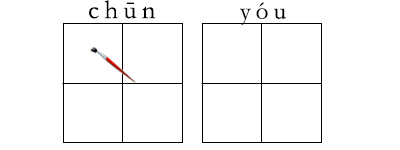
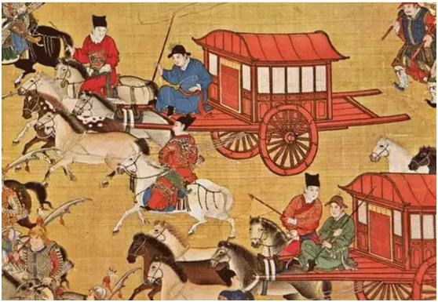
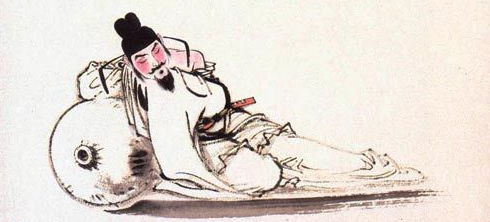
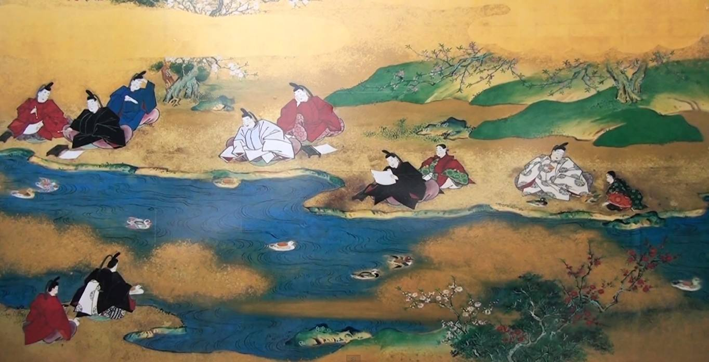

2017-3-09阅读（5,636）


春游，古称踏青，是一种古老的传统民俗文体活动，形成于先秦，流行于汉代，唐宋时期最为盛行。古时一般在上巳节，清明节。

提到春游的名篇佳作，首推晋代书法家王羲之的《兰亭集序》。附原文如下，
永和九年，岁在癸（guǐ）丑，暮春之初，会于会（kuài）稽（jī）山阴之兰亭，修禊（xì）事也。群贤毕至，少（shào）长（zhǎng）咸集。此地有崇山峻岭，茂林修竹，又有清流激湍（tuān），映带左右,引以为流觞（shāng）曲水，列坐其次。虽无丝竹管弦之盛，一觞一咏，亦足以畅叙幽情。
是日也，天朗气清，惠风和畅。仰观宇宙之大，俯察品类之盛（shèng），所以游目骋（chěng）怀，足以极视听之娱，信可乐也。
夫（fú）人之相与，俯仰一世。或取诸怀抱，悟言一室之内；或因寄所托，放浪形骸之外。虽趣(qǔ)舍万殊，静躁不同，当其欣于所遇，暂（zàn）得于己，怏（yàng）然自足，不知老之将至；及其所之既倦，情随事迁，感慨系（xì）之矣。向之所欣，俯仰之间，已为陈迹，犹不能不以之兴怀，况修短随化，终期于尽！古人云：“死生亦大矣。”岂不痛哉！
每览昔人兴感之由，若合一契，未尝不临文嗟悼（jiē dào），不能喻之于怀。固知一死生为虚诞，齐彭殇（shāng）为妄作。后之视今，亦犹今之视昔，悲夫（fú）！故列叙时人，录其所述，虽世殊事异，所以兴怀，其致一也。后之览者，亦将有感于斯文。

译文
永和九年，是癸丑之年，阴历三月初，（我们）会集在会稽山阴的兰亭，是为了从事修禊祭礼。众多贤才都汇聚在这里，年长的年少的都聚集在一起。兰亭这地方有高峻的山峰，高大茂密的竹林。又有清澈湍急的溪流，（如同青罗带一般）环绕在亭子的四周，（我们）引（清流激湍）来作为流觞的曲水，列坐在曲水旁边。虽然没有演奏音乐的盛况，（但）喝点酒，作点诗，也足以令人抒发内心深处的情意。这一天，晴明爽朗，春风和暖畅快。向上看，天空广大无边，向下看，地上事物如此繁多，借以纵展眼力，开畅胸怀，尽情的享受视听的乐趣，实在是快乐呀！
人们彼此交往，很快便度过一生。有时把自己的志趣抱负，在室内畅谈自己的胸怀抱负；有时就着自己所爱好的事物，寄托自己的情怀，不受任何拘束，放纵无羁地生活。虽然各有各的爱好，取舍爱好各不相同，安静与躁动不同，（可是）当他们对所接触的事物感到高兴时，一时感到自得，感到高兴和自足，不觉得老年即将到来；等到（对于）那些所得到的东西已经厌倦，感情随着事物的变化而改变，感慨随着而产生。过去感到高兴的事，转眼之间成为旧迹，仍然不能不因它引起心中的感触，何况寿命的长短，听凭造化，最终归结于消亡！古人说：“死生也是一件大事。”怎么能不悲痛呢？
每当看到古人（对死生的大事）发生感慨的原因，（和我所感慨的）像符契那样相合，没有不面对他们的文章而感叹悲伤的，（却）不能明白于心。因此知道把死和生等同起来的说法是不真实的，把长寿和短命等同起来的说法是妄造的。后代的人看现在，也正如同我们今天看过去一样，这真是可悲呀！所以我一个一个记下当时参加聚会的人，抄录下他们作的诗赋，即使时代变了，世事不同了，但是人们兴发感慨的缘由，人们的思想情趣是一样的。后世的读者，也将有感慨于这次集会的诗文。

文章赏析
文章首先记述了集会的时间、地点及与会人物，言简意赅。接着描绘兰亭所处的自然环境和周围景物，语言简洁而层次井然。描写景物，从大处落笔，由远及近，转而由近及远，推向无限。先写崇山峻岭，渐写清流激湍，再顺流而下转写人物活动及其情态，动静结合。然后再补写自然物色，由晴朗的碧空和轻扬的春风，自然地推向寥廓的宇宙及大千世界中的万物。意境清丽淡雅，情调欢快畅达。兰亭宴集，真可谓“四美俱，二难并”。
但天下没有不散的宴席，有聚合必有别离，所谓“兴尽悲来”当是人们常有的心绪，尽管人们取舍不同，性情各异。刚刚对自己所向往且终于获致的东西感到无比欢欣时，但刹那之间，已为陈迹。人的生命也无例外，所谓“不知老之将至”（孔子语）、“老冉冉其将至兮”（屈原语）、“人生天地间，奄忽若飙尘”（《古诗十九首》），这不能不引起人的感慨。每当想到人的寿命不论长短，最终归于寂灭时，更加使人感到无比凄凉和悲哀。如果说前一段是叙事写景，那么这一段就是议论和抒情。作者在表现人生苦短、生命不居的感叹中，流露着一腔对生命的向往和执着的热情。
踏青习俗延续至今，让我们潇潇洒洒踏青春游，去感受大自然带来的无限美景和怡人气息吧！